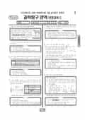

문제지

2023학년도 9월 모의평가 · 2022년 9월 시행
2023학년도 9모 과학탐구 생명과학Ⅰ 1등급컷은 원점수 45점(추정), 표준점수 최고점은 71점입니다.
원점수 1등급컷은 공식 발표값이 아니라 EBSi·입시기관 값입니다. 등급별 값은 등급컷 표, 출처 구분은 데이터 원칙에 있습니다.

시험지를 먼저 풀어 보세요. 등급컷·표준점수·난이도는 흐리게 가려 뒀어요.
| 등급 | 원점수 | 표준점수 | 백분위 | 누적 |
|---|---|---|---|---|
| 1 | 45 | 67 | 96 | 5.42% |
| 2 | 41 | 63 | 89 | 11.27% |
| 3 | 36 | 59 | 79 | 24.04% |
| 4 | 30 | 53 | 59 | 41.91% |
| 5 | 23 | 47 | 40 | 61.56% |
| 6 | 16 | 41 | 23 | 79.92% |
| 7 | 12 | 37 | 12 | 89.06% |
| 8 | 9 | 34 | 4 | 96.64% |
등급별 컷 · EBSi 원점수 추정 · 만점 50점
정답 변경 없음
원문 표에서 이 과목 문항을 찾지 못했어요
시험 전체 관련 보도 4건은 2023학년도 9월 모의평가 회차 페이지에 모아 두었어요.
한국교육과정평가원이 교육부 보도자료로 공개한 표준점수 도수분포로 계산했습니다.
발행 기관: 한국교육과정평가원(KICE). 파일 위치: 이 사이트가 보관한 사본. 저작권은 발행 기관에 있습니다. 원본과 다르거나 게시 중단이 필요하면 연락처로 알려 주세요. 등급컷 출처 구분은 데이터 원칙에서 설명합니다.
막대 색은 역대 대비 난이도 · 진한 막대가 이 시험 · 막대를 누르면 그 회차로 이동
| 회차 | 1등급컷 | 표점 최고 | 1등급 표점 | 난이도 |
|---|---|---|---|---|
| 9모2023학년도이 시험 | 45 | 71 | 67 | 매우 어려움 |
| 6모2023학년도 | 47 | 68 | 66 | 보통 |
| 수능2022학년도 | 42 | 72 | 65 | 매우 어려움 |
| 9모2022학년도 | 45 | 71 | 66 | 어려움 |
| 6모2022학년도 | 45 | 70 | 66 | 어려움 |
생명과학Ⅰ 표준점수 최고점은 71점, 오답률 50%를 넘긴 문항은 8개였습니다. 오답률 상위 네 문항 중 셋이 유전 문항이었습니다.
16번(3점, 76.0%)은 두 형질 (가), (나) 가운데 하나만 X 염색체에 있는 가계도와 DNA 상대량 표입니다. 풀이는 (가)를 X 염색체에 올려 보는 데서 시작합니다. X 우성이라면 (가)가 나타난 남자 1의 딸 5에게도 (가)가 나타나야 하는데 정상이고, X 열성이라면 (가)가 나타난 여자 4에게서 정상 아들 6이 태어날 수 없습니다. 두 경우가 모두 모순이므로 (가)는 상염색체, (나)가 X 염색체 유전입니다. 그다음 (나)가 우성인지 열성인지를 같은 방식으로 따지는 순서였습니다.
17번(2점, 75.0%)은 서로 다른 상염색체에 있는 세 형질 ㉠, ㉡, ㉢을 다룹니다. ㉠은 대립유전자 A, B, D로 결정되는데, AD와 AA, BD와 BB의 표현형이 각각 같으니 A와 B는 D에 대해 우성입니다. 표현형이 4가지라면 A와 B 사이에는 우열이 없어 [AB], [A], [B], [D]가 됩니다. 여기에 ㉡(최대 3가지), ㉢(최대 2가지)의 표현형 수를 곱해 자녀에게 나타날 수 있는 경우를 세는 문항이었습니다.
19번(3점, 67.7%)은 근육 원섬유 마디 X가 2d만큼 짧아지면 ㉠은 d 줄고, ㉡은 d 늘고, ㉢은 2d 준다는 관계로, 생성할 수 있는 힘이 다른 두 시점의 구간 길이를 표로 채우는 문항입니다. 18번(3점, 66.2%)은 가족 구성원 세포의 대립유전자 DNA 상대량으로 핵상과 돌연변이를 판단합니다. 아버지의 세포 Ⅰ에서 B와 B*의 상대량 합이 1이면 핵상이 n이고, 자녀 1의 세포 Ⅲ에서 A가 2, B*가 1이면 Ⅲ은 DNA 복제 전의 2n 세포라는 식으로 세포마다 핵상을 먼저 확정해야 했습니다.